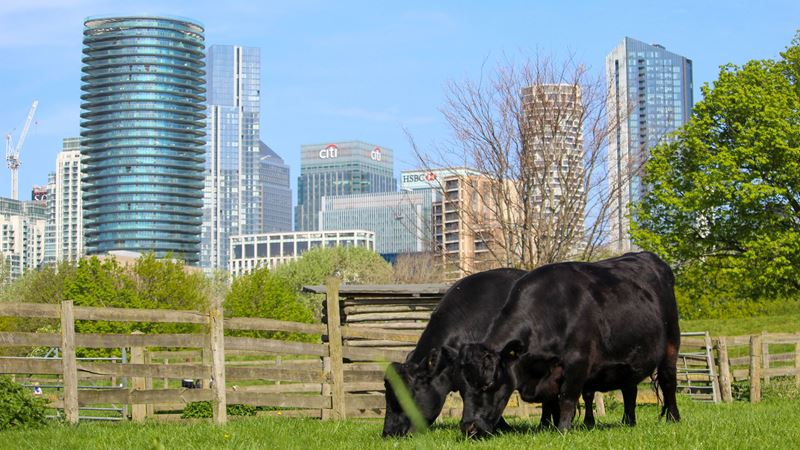
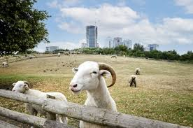

Welcome to the best and most varied farm right in the heart of central London! We are just a stone's throw away from Big Ben!


Vauxhall City Farm is one of the oldest and most central city farms in London. We are a stone's throw away from Big Ben. This creates a vibrant and relaxing oasis of calm within one of the busiest cities in the world. Please come and enjoy this unqique space.